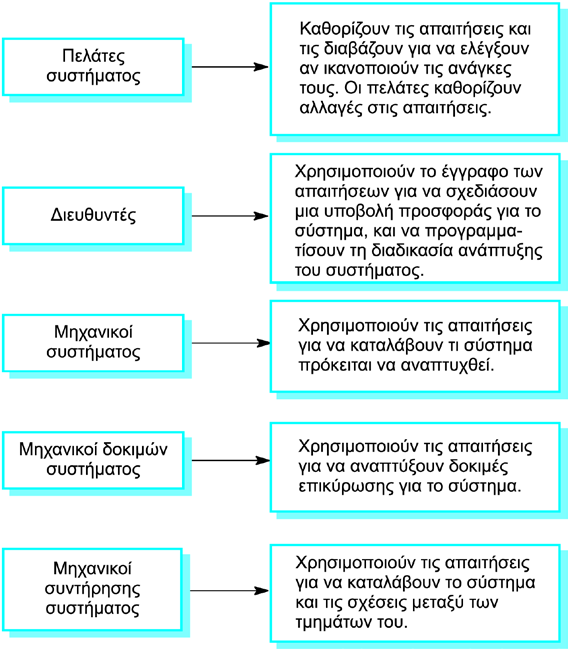
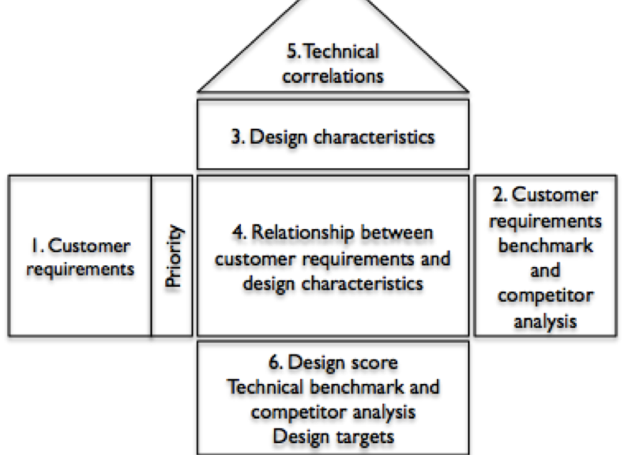

Απαιτήσεις Λογισμικού

Γιώργος Καρανικόλας - Δημήτρης Τζήκας - Χάρης Ψαρράς
Αλεξάνδρειο ΤΕΙ Θεσσαλονίκης – Πληροφοριακά Συστήματα 1 – 4η Παρουσίαση
Περιεχόμενα
- Τι είναι το λογισμικό
- Προμελέτη
- Τι είναι η απαίτηση λογισμικού
- Τι είναι ο ορός “Απαίτηση”
- Ανάλυση απαιτήσεων
- Καθορισμός απαιτήσεων
- Ειδή απαιτήσεων
- Αλληλεπίδραση απαιτήσεων
Περιεχόμενα
- Τύποι απαιτήσεων
- Απαιτήσεις και Σχεδιασμός
- Το έγγραφο απαιτήσεων
- Παράδειγμα απαιτήσεων: Σύστημα LIBSYS
- Quality Function Deployment (QFD)
- Τι είναι το "House of Quality"
Τι είναι το λογισμικό;
Με τον όρο λογισμικό υπολογιστών ή λογισμικό (software) ορίζεται η συλλογή από προγράμματα υπολογιστών, διαδικασίες και οδηγίες χρήσης που εκτελούν ορισμένες εργασίες σε ένα υπολογιστικό σύστημα.
Προμελέτη
Η προμελέτη είναι η απλή περιγραφή της σύλληψης με ενδείξεις ως προς του βασικούς συντελεστές που πρέπει να μελετηθούν στη μελέτη σκοπιμότητας :
- Προμελέτη
- Μελέτη Σκοπιμότητας
- Μελέτη Βιωσιμότητας
- Σχεδιασμός
- Εκτέλεση
- Μεταξιολόγηση
ΜΕΛΕΤΗ ΣΚΟΠΗΜΟΤΗΤΑΣ
Η μελέτη σκοπιμότητας είναι μια αναφορά που αποφαίνεται αν αξίζει να προχωρήσει το προτεινόμενο σύστημα. Ελέγχει αν το σύστημα μπορεί:
- Να υλοποιηθεί με την τωρινή τεχνολογία και τον διαθέσιμο προϋπολογισμό
- Να συνεργαστεί με ήδη ενεργά συστήματα
ΤΙ ΕΊΝΑΙ Η ΑΠΑΙΤΗΣΗ ΛΟΓΙΣΜΙΚΟΥ
Μπορεί να είναι οτιδήποτε από μια υψηλού επιπέδου αφηρημένη δήλωση μιας υπηρεσίας ή ενός περιορισμού του συστήματος μέχρι ένας λεπτομερής μαθηματικός ορισμός μιας λειτουργίας του συστήματος.
ΤΙ ΕΊΝΑΙ Ο ΟΡΟΣ “ΑΠΑΙΤΗΣΗ”
Οι απαιτήσεις μπορούν να έχουν διττή λειτουργία:
- Μπορεί να αποτελούν την βάση διαπραγμάτευσης μιας σύμβασης, μπορεί να αφήνουν περιθώρια διαφορετικών ερμηνειών μπορεί να αποτελούν την βάση για την ίδια την σύμβαση.
- Πρέπει να καθορίζονται λεπτομερώς.
Και οι δύο αυτοί τύποι δηλώσεων μπορεί να παίξουν τον ρόλο απαιτήσεων
ΑΝΑΛΥΣΗ ΑΠΑΙΤΗΣΕΩΝ
- Εκπόνηση
- Ανάλυση
- Προδιαγραφή
- Διαχείριση
ΕΚΠΟΝΗΣΗ
- Είναι η συλλογή και η ανακάλυψη απαιτήσεων από τους ενδιαφερόμενους και από άλλες πηγές.
- Μπορούν να χρησιμοποιηθούν ποικίλες τεχνικές.
- Είναι το πρώτο βήμα για την ανάπτυξη των απαιτήσεων.
ΑΝΑΛΥΣΗ
- Είναι η λογική κατανομή που προχωρά από την εκδήλωση.
- Περιλαμβάνει την επίτευξη μιας πιο πλούσιας και ακριβέστερης κατανόησης της κάθε απαίτησης και την εκπροσώπηση συνόλων απαιτήσεων σε πολλαπλούς συμπληρωματικούς τρόπους.
ΠΡΟΔΙΑΓΡΑΦΗ
Περιλαμβάνει την αντιπροσώπευση και την αποθήκευση των γνώσεων που συλλέγονται με συνεχή και καλά οργανωμένο τρόπο που διευκολύνει την αποτελεσματική επικοινωνία και την διαχείριση της αλλαγής.
ΔΙΑΧΕΙΡΙΣΗ
Περιλαμβάνει τεχνικές για να επιβεβαιωθεί ότι έχει καθοριστεί η σωστή σειρά απαιτήσεων για να δημιουργηθεί μια λύση που να ικανοποιεί τους επιχειρηματικούς στόχους του έργου.
ΚΑΘΟΡΙΣΜΟΣ ΑΠΑΙΤΗΣΕΩΝ
ΔΙΑΔΙΚΑΣΙΑ ΚΑΘΟΡΙΣΜΟΥ ΑΠΑΙΤΗΣΕΩΝ
ΕΙΔΗ ΑΠΑΙΤΗΣΕΩΝ
- Λειτουργικές απαιτήσεις
- Μη λειτουργικές απαιτήσεις
- Απαιτήσεις συστήματος
- Αναδυόμενες απαιτήσεις
ΛΕΙΤΟΥΡΓΙΚΕΣ ΑΠΑΙΤΗΣΕΙΣ
- Περιγράφουν λειτουργικές δυνατότητες ή υπηρεσίες του συστήματος
- Εξαρτώνται από τον τύπο του λογιστικού, από τους αναμενόμενους χρήστες και από τον τύπο του συστήματος στον οποίο χρησιμοποιείται το λογιστικό
ΛΕΙΤΟΥΡΓΙΚΕΣ ΑΠΑΙΤΗΣΕΙΣ
- Οι λειτουργικές απαιτήσεις χρήστη µπορεί να είναι υψηλού επιπέδου δηλώσεις των δυνατοτήτων του συστήματος, αλλά οι λειτουργικές απαιτήσεις του συστήματος πρέπει να περιγράφουν µε λεπτομέρειες τις υπηρεσίες του συστήματος.
ΠΑΡΑΔΕΙΓΜΑΤΑ
- Ο χρήστης πρέπει να έχει τη δυνατότητα να πραγματοποιεί αναζήτηση είτε σε όλες τις βάσεις δεδομένων είτε σε υποσύνολο αυτών.
- Το σύστημα θα πρέπει να παρέχει στο χρήστη κατάλληλο λογισμικό προβολής για την ανάγνωση εγγράφων από την αποθήκη εγγράφων.
- Σε κάθε παραγγελία θα πρέπει να αποδίδεται ένα μοναδικό αναγνωριστικό (ORDER_ID), το οποίο ο χρήστης θα μπορεί να αντιγράφει στο μόνιμο αποθηκευτικό χώρο του λογαριασμού.
ΠΛΗΡΟΤΗΤΑ ΚΑΙ ΣΥΝΕΠΕΙΑ ΤΩΝ ΑΠΑΙΤΗΣΕΩΝ
Οι απαιτήσεις θα πρέπει να είναι τόσο πλήρεις όσο και συνεπείς.
- Πλήρεις: Πρέπει να περιλαμβάνουν περιγραφές όλων των βοηθημάτων που απαιτούνται.
- Συνεπείς: Οι περιγραφές των βοηθημάτων του συστήματος δεν πρέπει να περιέχουν αντιφάσεις ή να έρχονται σε διένεξη μεταξύ τους.
ΜΗ ΛΕΙΤΟΥΡΓΙΚΣ ΑΠΑΙΤΗΣΕΙΣ
- Ορίζουν ιδιότητες και περιορισμούς του συστήματος, για παράδειγμα την αξιοπιστία, το χρόνο απόκρισης και τις απαιτήσεις σε αποθηκευτικό χώρο. Περιορισμοί μπορεί να είναι οι δυνατότητες των συσκευών εισόδου-εξόδου, οι αναπαραστάσεις του συστήματος.
ΜΗ ΛΕΙΤΟΥΡΓΙΚΕΣ ΑΠΑΙΤΗΣΕΙΣ
- Μπορεί να καθοριστούν απαιτήσεις διαδικασιών οι οποίες θα επιτάσσουν µια συγκεκριμένη γλώσσα προγραμματισμού ή µέθοδο ανάπτυξης.
- Μπορεί να είναι πιο κρίσιµες από τις λειτουργικές - αν οι πρώτες δεν πληρούνται, το σύστηµα δεν θα είναι αποδεκτό, ακόµα κι αν επιτελεί τις λειτουργίες για τις οποίες προορίζεται.
ΧΑΡΑΚΤΗΡΗΣΤΙΚΑ
Τα κύρια χαρακτηριστικά των μη λειτουργικών απαιτήσεων είναι:
- Επαληθευσιμότητα
- Ευελιξία
- Δυνατότητα επαναχρησιμοποίησης
- Φορητότητα
ΚΑΤΗΓΟΡΟΠΟΙΗΜΕΝΑ
- Απαιτήσεις προϊόντος– Απαιτήσεις που καθορίζουν τη συμπεριφορά του τελικού προϊόντος, για παράδειγμα, την ταχύτητα εκτέλεσης, την αξιοπιστία.
- Εταιρικές απαιτήσεις– Απαιτήσεις που πηγάζουν από την εταιρική πολιτική και τις εταιρικές διαδικασίες, για παράδειγμα, τα πρότυπα διαδικασιών που πρέπει να χρησιμοποιηθούν, οι απαιτήσεις της υλοποίησης .
ΚΑΤΗΓΟΡΟΠΟΙΗΜΕΝΑ
- Εξωτερικές απαιτήσεις– Απαιτήσεις που προέρχονται από παράγοντες εξωτερικούς προς το σύστημα και τη διαδικασία ανάπτυξής του, για παράδειγμα, απαιτήσεις διαλειτουργικότητας, νομικές απαιτήσεις.
ΤΥΠΟΙ
ΠΑΡΑΔΕΙΓΜΑΤΑ
- Απαίτηση προϊόντος
- Εταιρική απαίτηση
Η διασύνδεση χρήστη του LIBSYS θα πρέπει να υλοποιηθεί με απλή HTML, χωρίς πλαίσια και μικροεφαρμογές Java.
Τα έγγραφα για τη διαδικασία ανάπτυξης του συστήματος και για τα παραδοτέα θα πρέπει να είναι σύμφωνα με τη διαδικασία και τα παραδοτέα που ορίζονται στο XYZCo-SP-STAN-95
- Εξωτερική απαίτηση
Το σύστημα θα πρέπει να μην αποκαλύπτει στο προσωπικό της βιβλιοθήκης που το χρησιμοποιεί οποιεσδήποτε προσωπικές πληροφορίες των χρηστών του, εκτός από το όνομά τους και τον αριθμό βιβλιογραφικής αναφοράς.
ΣΤΟΧΟΙ ΚΑΙ ΑΠΑΙΤΗΣΕΙΣ
Η ακριβής διατύπωση των μη λειτουργικών απαιτήσεων είναι πολύ δύσκολη, ενώ δύσκολη είναι και η επαλήθευση τέτοιων απαιτήσεων. Υπάρχουν δυο κατηγορίες:
- Στόχος
- Επαληθεύσιμη μη λειτουργική απαίτηση
ΑΠΑΙΤΗΣΕΙΣ ΣΥΣΤΗΜΑΤΟΣ
- Απαιτήσεις σχετικές με το «σύστημα» ή το «περιβάλλον» στο οποίο εντάσσεται το υπό ανάπτυξη λογισμικό ﴾π.χ. μπορεί να είναι συστατικό ενός μεγαλύτερου όλου﴿
- Απαιτήσεις υλικού & απαιτήσεις δικτύου
ΑΝΑΔΥΟΜΕΝΕΣ ΑΠΑΙΤΗΣΕΙΣ
Ποιοτικά χαρακτηριστικά που προκύπτουν από την ένταξη του λογισμικού στο «σύστημα» ή "περιβάλλον" και αναφέρονται στη λειτουργία του ως όλον.
ΑΛΛΗΛΕΠΙΔΡΑΣΗ ΑΠΑΙΤΗΣΕΩΝ
- Σε σύνθετα συστήματα είναι συνήθεις οι διενέξεις μεταξύ των διάφορων μη λειτουργικών απαιτήσεων.
ΑΛΛΗΛΕΠΙΔΡΑΣΗ ΑΠΑΙΤΗΣΕΩΝ
- Σύστημα διαστημικού σκάφους
- Για την ελαχιστοποίηση του βάρους, το πλήθος των τσιπ του συστήματος πρέπει να είναι ελάχιστο.
- Για την ελαχιστοποίηση της κατανάλωσης ενέργειας, πρέπει να χρησιμοποιούνται τσιπ μικρότερης ισχύος.
- Όμως η χρήση τσιπ μικρότερης ισχύος μπορεί να σημαίνει ότι πρέπει να χρησιμοποιηθούν περισσότερα τσιπ.
ΤΥΠΟΙ ΑΠΑΙΤΗΣΕΩΝ
- Απαιτήσεων χρηστή
- Απαιτήσεων συστήματος
ΑΠΑΙΤΗΣΕΩΝ ΧΡΗΣΤΗ
- Θα πρέπει να περιγράφουν τις λειτουργικές και μη λειτουργικές απαιτήσεις με τέτοιον τρόπο ώστε να είναι κατανοητές από τους χρήστες του συστήματος που δεν έχουν λεπτομερείς τεχνικές γνώσεις.
ΑΠΑΙΤΗΣΕΩΝ ΧΡΗΣΤΗ
- Οι απαιτήσεις χρήστη ορίζονται με τη βοήθεια ανθρώπινων στοιχείων γλωσσικής έκφρασης, πινάκων και διαγραμμάτων αφού αυτά τα στοιχεία είναι κατανοητά από όλους τους χρήστες.
ΑΠΑΙΤΗΣΕΩΝ ΣΥΣΤΗΜΑΤΟΣ
Δομημένο έγγραφο που περιγράφει µε λεπτομέρειες τις λειτουργίες, τις υπηρεσίες και τους περιορισμούς του συστήματος.
Αναγνωστες
ΑΠΑΙΤΗΣΗ ΠΕΔΙΟΥ
- Προέρχονται από το πεδίο εφαρμογής του συστήματος και περιγράφουν χαρακτηριστικά και δυνατότητες του συστήματος οι οποίες αντανακλούν το πεδίο.
- Οι απαιτήσεις πεδίου μπορεί να είναι νέες λειτουργικές απαιτήσεις, περιορισμοί για υπάρχουσες λειτουργικές απαιτήσεις, ή μπορεί να καθορίζουν πώς πρέπει να εκτελούνται κάποιοι συγκεκριμένοι υπολογισμοί.
- Αν δεν ικανοποιούνται οι απαιτήσεις πεδίου, το σύστημα μπορεί να είναι αδύνατο να λειτουργήσει ικανοποιητικά.
- Αν δεν ικανοποιούνται οι απαιτήσεις πεδίου, το σύστημα μπορεί να είναι αδύνατο να λειτουργήσει ικανοποιητικά.
ΠΡΟΒΛΗΜΑΤΑ ΑΠΑΙΤΗΣΗΣ ΠΕΔΙΟΥ
- Έλλειψη ευχέρειας κατανόησης
- Είναι γραμμένες στη γλώσσα του πεδίου εφαρμογής.
- Συχνά είναι δυσνόητες από τους μηχανικοί ανάπτυξης του συστήματος.
- Έλλειψη ρητής διατύπωσης
- Οι ειδικοί του πεδίου κατανοούν το χώρο τόσο καλά που δεν διανοούνται καν να αποσαφηνίσουν τις απαιτήσεις πεδίου.
ΑΠΑΙΤΗΣΕΙΣ ΚΑΙ ΣΧΕΔΙΑΣΜΟΣ
- Κατά κανόνα, οι απαιτήσεις δηλώνουν τι πρέπει να κάνει το σύστημα και η σχεδίαση περιγράφει τον τρόπο με τον οποίο θα το κάνει.
- Στην πράξη, οι απαιτήσεις και η σχεδίαση είναι αλληλένδετες
- Ίσως χρειαστεί να σχεδιάσετε την αρχιτεκτονική του συστήματος για να διευκολύνετε τη δόμηση της προδιαγραφής απαιτήσεων
- Το σύστημα ίσως πρέπει να συνεργάζεται με άλλα συστήματα, κάτι που δημιουργεί απαιτήσεις σχεδίασης
- Η χρήση μιας συγκεκριμένης σχεδίασης μπορεί να αποτελεί απαίτηση πεδίου.
ΤΟ ΕΓΓΡΑΦΟ ΑΠΑΙΤΗΣΕΩΝ
Είναι η επίσημη δήλωση του τι πρέπει να υλοποιήσουν οι κατασκευαστές του συστήματος.
- Θα πρέπει να περιλαμβάνει τόσο τις απαιτήσεις χρήστη για το σύστημα όσο και μια λεπτομερή προδιαγραφή των απαιτήσεων συστήματος.
- ΔΕΝ είναι έγγραφο που αφορά το σχεδιασμό.
ΧΡΗΣΤΕΣ ΕΓΓΡΑΦΟΥ ΑΠΑΙΤΗΣΕΩΝ
ΠΡΟΤΥΠΟ ΑΠΑΙΤΗΣΕΩΝ ΚΑΤΑ IEEE
- Ορίζει τη γενική δομή του εγγράφου απαιτήσεων το οποίο πρέπει να είναι ξεχωριστό για κάθε σύστημα.
- Εισαγωγή
- Γενική περιγραφή
- Ειδικές απαιτήσεις
- Παραρτήματα
- Ευρετήριο
ΔΟΜΗ ΕΝΌΣ ΕΓΓΡΑΦΟΥ ΑΠΑΙΤΗΣΕΩΝ
- Πρόλογος
- Εισαγωγή
- Γλωσσάρι (λεξικό όρων)
- Ορισμός απαιτήσεων χρήστη
- Αρχιτεκτονική συστήματος
ΔΟΜΗ ΕΝΌΣ ΕΓΓΡΑΦΟΥ ΑΠΑΙΤΗΣΕΩΝ
- Προδιαγραφή απαιτήσεων συστήματος
- Μοντέλα συστήματος
- Εξέλιξη συστήματος
- Παραρτήματα
- Ευρετήριο
ΠΑΡΑΔΕΙΓΜΑ ΑΠΑΙΤΗΣΕΩΝ: ΣΥΣΤΗΜΑ LIBSYS
Είναι ένα σύστημα βιβλιοθηκονομίας που παρέχει μια διασύνδεση για μια σειρά βάσεων δεδομένων και το οποίο επιτρέπει στους χρήστες την αναζήτηση, τη λήψη και την εκτύπωση άρθρων.
ΠΩΣ ΔΟΥΛΕΥΕΙ
ΠΡΟΔΙΑΓΡΑΦΗ ΑΠΑΙΤΗΣΕΩΝ
- Υποχρεωτική ενημέρωση χρήστη κατά την υποβολή αίτησης για κάποιο έγγραφο
- Αποθήκευση αίτησης στο σύστημα για τουλάχιστον 5 χρόνια μετά
- Ύπαρξη ημερολογίου για καταγραφή αιτήσεων
- Ενημέρωση για δικαιώματα δανεισμού
ΤΕΧΝΙΚΕΣ ΕΠΙΚΥΡΩΣΗΣ ΑΠΑΙΤΗΣΕΩΝ
Οι τεχνικές επικύρωσης απαιτήσεων χωρίζονται σε τρεις κατηγορίες:
- Επισκοπήσεις απαιτήσεων
- Κατασκευή πρωτοτύπων
- Παραγωγή δοκιμαστικών αναφορών
ΕΠΙΣΚΟΠΗΣΕΙΣ ΑΠΑΙΤΗΣΕΩΝ
Οι επισκοπήσεις των απαιτήσεων πρέπει να έχουν τα εξής χαρακτηριστικά:
- Επαληθευσιμότητα
- Κατανοησιμότητα
- Ανιχνευσιμότητα
- Προσαρμοστικότητα
QUALITY FUNCTION DEPLOYMENT (QFD)
Η QFD είναι ένα σύστημα που μεταφράζει τις απαιτήσεις των πελατών σε κατάλληλες απαιτήσεις για την επιχείρηση σε κάθε στάδιο του κύκλου ανάπτυξης του προϊόντος, από την έρευνα και την ανάπτυξη του προϊόντος ως την δημιουργία και από την κατασκευή ως το marketing, τη διανομή και τις πωλήσεις.
ΜΕΘΟΔΟΛΟΓΙΑ
Ο Οίκος της Ποιότητας είναι ο πιο αναγνωρισμένος και διαδεδομένος τρόπος ανάλυσης δεδομένων της QFD. Ουσιαστικά μετατρέπει τις ανάγκες των πελατών, που είναι μεγέθη μη μετρήσιμα ,στις απαιτήσεις του προϊόντος οι οποίες είναι μετρήσιμες.
ΦΑΣΕΙΣ
Οι τέσσερις φάσεις της QFD είναι οι ακόλουθες:
- Προγραμματισμός προϊόντος
- Σχεδιασμός προϊόντος
- Προγραμματισμός διαδικασίας
- Έλεγχος διαδικασίας
ΣΥΣΤΑΤΙΚΑ ΣΤΟΙΧΕΙΑ
- Απαιτήσεις των πελατών
- Οι προτεραιότητες των απαιτήσεων των καταναλωτών
- Οι συσχετίσεις μεταξύ απαιτήσεων καταναλωτών και τεχνικών απαιτήσεων
- Η ανταγωνιστική αξιολόγηση
- Οι τεχνικοί στόχοι
Τι είναι το "House of Quality"
Το Σπίτι της Ποιότητας είναι ένα διάγραμμα, που μοιάζει με ένα σπίτι, που χρησιμοποιείται για τον προσδιορισμό της σχέσης μεταξύ των επιθυμιών των πελατών και των δυνατοτήτων της εταιρίας / του προϊόντος. Είναι μέρος της ανάπτυξης της λειτουργίας ποιότητας (Quality Function Deployment - QFD) και χρησιμοποιεί ένα πλέγμα σχεδιασμού για να συσχετίσει τον πελάτη με τον τρόπο με τον οποίο μια επιχείρηση (που παράγει τα προϊόντα) θα ανταποκριθεί σε αυτές τις επιθυμίες.
Χαρακτηριστικά του"House of Quality"
- Προσδιορίζει τι θέλει ο πελάτης .
- Προσδιορίζει τον τρόπο με τον οποίο το προϊόν θα ικανοποιήσει τον πελάτη . Αναφέρεται στην αναγνώριση συγκεκριμένων χαρακτηριστικών, χαρακτηριστικών ή ιδιοτήτων του προϊόντος και στην ένδειξη του τρόπου με τον οποίο θα ικανοποιήσει τις επιθυμίες του πελάτη
- Προσδιορίζει τις σχέσεις μεταξύ του πώς . Δύο ερωτήσεις, που πρέπει να απαντηθούν εδώ: Πώς συνδέονται οι σχέσεις μας; Ποια είναι η σχέση μεταξύ των δύο ή περισσότερων μας;
- Αναπτύσσει αξιολογήσεις αξιολόγησης . Αναφέρεται στη χρήση των αξιολογήσεων σημασίας του πελάτη και των βαρών από τις σχέσεις στο πλέγμα για τον υπολογισμό της αξιολόγησης της σπουδαιότητάς μας.
- Αξιόλογη ανταγωνιστικά προϊόντα ή υπηρεσίες . Το ερώτημα που πρέπει να απαντηθεί εδώ είναι: Πόσο καλά συναντούν τα ανταγωνιστικά προϊόντα που θέλουν οι πελάτες; Η δραστηριότητα αυτή βασίζεται εντελώς στην έρευνα.
- Προσδιορίζει τα επιθυμητά τεχνικά χαρακτηριστικά . Σε αυτό το βήμα, η απόδοσή μας και η απόδοση του ανταγωνιστή καθορίζονται και συγκρίνονται.